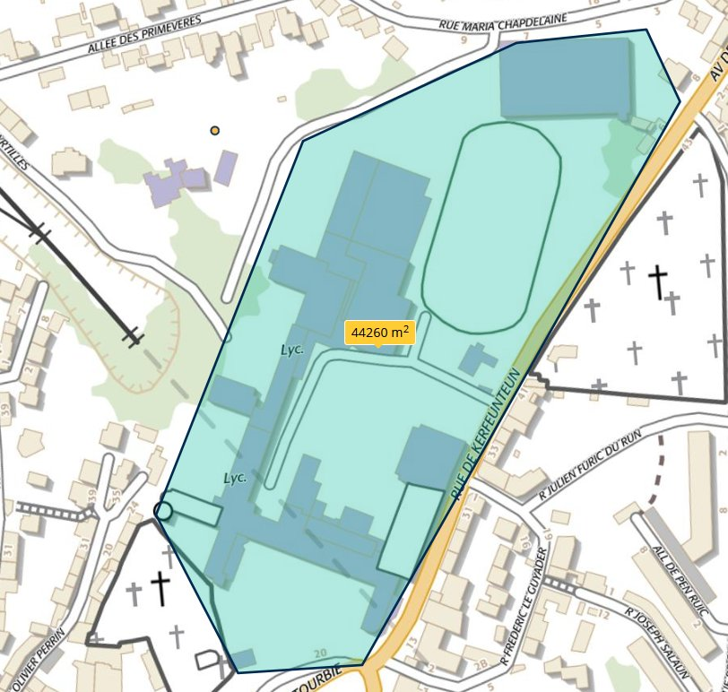
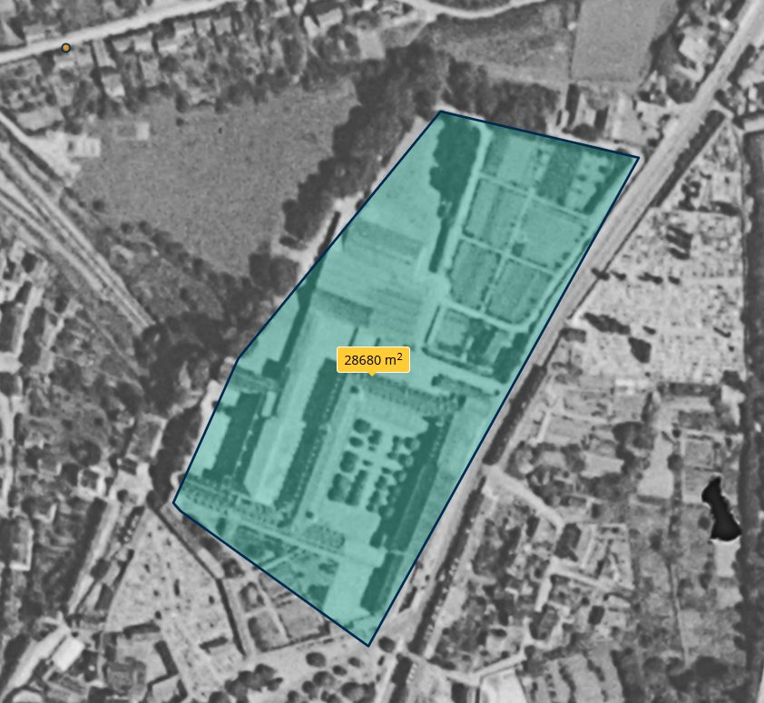

Réservé à l’enseignant
Correction – Les cartes numériques
1 Superficie actuelle du lycée Le Likès
Avec le fond « Parcelles cadastrales » et l’outil de mesure de surface : ≈ 44 260 m² (soit environ 4,4 hectares).

2 Superficie en 1950-1965
Avec le fond « Photographies aériennes 1950-1965 » : ≈ 28 680 m².

3 Comparaison
Écart : 44 260 − 28 680 = 15 580 m². Le lycée occupe aujourd’hui environ 54 % de surface en plus (44 260 ÷ 28 680 ≈ 1,54) qu’en 1950-1965 : de nouveaux bâtiments et espaces (cours, terrains) ont été construits.
Remarque
Les valeurs dépendent du contour tracé par chaque élève : accepte une marge raisonnable (par exemple ± 10 %). Les élèves doivent surtout constater que la surface a nettement augmenté.